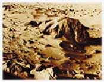

|
Kýsacasý Dünya hakkýnda yaptýðýmýz her türlü inceleme bizlere Dünya'nýn insan yaþamý için özel olarak tasarlanmýþ olduðunu gösterecektir. Güneþ Sistemi'ndeki diðer gezegenler arasýnda Dünya'ya en yakýn özelliklere sahip olan Mars bile Dünya ile asla kýyaslanamayacak kadar kuru ve ölü bir kaya yýðýnýdýr. Dünya'daki yaþama uygun koþullarýn özel olarak tasarlanmýþ olduðunun görülmesi için diðer gezegenlerin genel yapýsýna þöyle bir bakmak yeterli olacaktýr. Sýk sýk gündeme gelen gezegenlerden biri olan Mars'ý ele alalým. Mars'ýn atmosferi yoðun karbondioksit içeren zehirli bir karýþýmdýr. |
 |
Gezegenin üzerinde hiç su yoktur. Yandaki küçük resimde de görüldüðü gibi Mars'ýn yüzeyinde büyük göktaþlarýnýn çarpmasýyla meydana gelen dev kraterler dikkat çeker. Gezegende çok kuvvetli rüzgarlar ve aylarca süren kum fýrtýnalarý hüküm sürer. Isý –53 derece civarýndadýr.
Mars bu özellikleriyle canlý yaþamýnýn mümkün olmadýðý, tam anlamýyla ölü bir gezegendir. Bu karþýlaþtýrma dahi Dünya'yý yaþanabilir yapan özelliklerin ne kadar büyük bir nimet olduðunu anlamak için yeterlidir.
Tüm evreni, yýldýzlarý, gezegenleri, daðlarý ve denizleri kusursuzca yaratan, insana ve tüm canlýlara hayat veren, herþeyi yoktan var etmeye güç yetiren, yarattýklarýný insanýn emrine veren, sonsuz güç ve kudret sahibi olan Allah'týr. Ýçinde yaþadýðý Dünya'daki ihtiþamlý yapýyý gören her insana düþen hemen Allah'a yönelmek, tüm yaþamýnýnda Allah'ýn rýzasýna uygun davranýþlarda bulunmak; O'nun yarattýklarýna, verdiði nimetlere þükretmek, bütün bu güzellikleri veren Allah'a yakýn olmak, O'nu dost ve vekil edinmektir. Bütün bunlarýn sahibi olan Allah hamde layýk olandýr.
Yaratan, hiç yaratmayan gibi midir? Artýk öðüt alýp-düþünmez misiniz? Eðer Allah'ýn nimetini saymaya kalkýþacak olursanýz, onu bir genelleme yaparak bile sayamazsýnýz. Gerçekten Allah, baðýþlayandýr, esirgeyendir. (Nahl Suresi, 17-18)
Oksijen çok önemlidir, çünkü canlýlar enerji elde etmek için oksijene ihtiyaç duyar. Oksijen elde etmek için de solunum yaparlar. Soluduðumuz havadaki oksijen oraný ise, son derece hassas dengelerle tespit edilmiþtir.
Atmosferdeki oksijen oranýnýn dengede kalmasý da, mükemmel bir "geri dönüþüm" sistemi sayesinde gerçekleþir. Ýnsanlar ve hayvanlar devamlý olarak oksijen tüketirler ve kendileri için zehirli olan karbondioksiti üretirler. Bitkiler ise bu iþlemin tam tersini gerçekleþtirir ve karbondioksiti oksijene çevirerek canlýlýðýn devamýný saðlarlar. Her gün bitkiler tarafýndan milyarlarca ton oksijen bu þekilde üretilerek atmosfere salýnýr.
Eðer bitkiler de insanlar ve hayvanlarla ayný reaksiyonu gerçekleþtirselerdi, Dünya çok kýsa sürede yaþanýlmaz bir gezegene dönüþürdü. Örneðin, hem hayvanlar hem de bitkiler oksijen üretselerdi, atmosfer kýsa sürede "yanýcý" bir özellik kazanýr ve en ufak bir kývýlcým dev yangýnlar çýkarýrdý. Sonunda da Dünya büyük bir patlamayla yanarak kavrulurdu. Öte yandan, eðer hem bitkiler hem de hayvanlar karbondioksit üretselerdi, bu kez atmosferdeki oksijen hýzla tükenir ve bir süre sonra canlýlar nefes almalarýna raðmen "boðularak" toplu halde ölmeye baþlarlardý.
Bütün bunlar Dünya atmosferinin
insan yaþamý için özel olarak Allah tarafýndan yaratýldýðýný göstermektedir.
Evren baþýboþ bir mekan deðildir. Her detayýyla planlanmýþ ve üstün güç sahibi
olan Allah tarafýndan yaratýlmýþtýr.
Bu özellikleri sayesinde daðlar, yeryüzü tabakalarýnýn birleþim noktalarýnda yer üstüne ve yeraltýna doðru uzanarak bu tabakalarý birbirine perçinler.
Bu þekilde, yerkabuðunu sabitleyerek maðma tabakasý üzerinde ya da kendi tabakalarý arasýnda kaymasýný engeller. Kýsacasý daðlarý, tahtalarý birarada tutan çivilere benzetebiliriz. Daðlarýn bu perçinleme özelliði, son derece hareketli bir yapýsý olan yerkabuðunu adeta sabitleyerek sarsýntýlarý büyük ölçüde engeller.
Son derece ihtiþamlý bir görüntüye sahip olan daðlarýn varlýðý yeryüzündeki baþka dengelerin saðlanmasý bakýmýndan da son derece önemlidir. Özellikle ýsýnýn dengeli bir biçimde daðýlýmýnda daðlar önemli bir faktördür.
Dünya'nýn ekvatoru ile kutuplarý arasýnda yaklaþýk 100°C'lik bir ýsý farký vardýr. Eðer böyle bir ýsý farký fazla engebesi olmayan bir yüzeyde gerçekleþmiþ olsaydý, hýzý saatte 1000 km'ye varan fýrtýnalar Dünya'yý allak bullak ederdi. Oysa yeryüzünde, ýsý farkýndan dolayý ortaya çýkmasý muhtemel kuvvetli hava akýmlarýný bloke edecek engebeler vardýr. Bu engebeler, yani sýradaðlar, Çin'de Himalayalar'la baþlar, Anadolu'da Toroslar'la devam eder ve Avrupa'da Alpler'e kadar sýradaðlar halinde uzanarak batýda Atlas Okyanusu, doðuda Büyük Okyanus'la birleþir.
Yeryüzündeki bütün
detaylarda olduðu gibi daðlarda da tecelli eden Allah'ýn sonsuz sanatýdýr.
Yaþadýðýmýz Dünya'yý bizim için kusursuz bir biçimde Allah yaratmýþtýr. Ýnsana
düþen ise dünya üzerinde bu ihtiþamlý yapýlarý görerek, Allah'a kulluk etmeyi
hayatýnýn en önemli gerçeði olarak kabul etmesi ve sadece bunun için
çalýþmasýdýr. Çünkü insan sayýsýz nimete muhtaçtýr ama Allah hiçbir þeye
ihtiyacý olmayandýr.
Bu sayede okyanuslardaki ve denizlerdeki büyük su kütleleri, Dünya'nýn ýsýsýnýn dengelenmesini saðlar. Bu nedenle denize yakýn bölgelerde gece ve gündüz arasýndaki ýsý farklýlýklarý çok azdýr. Bu da bu bölgeleri daha yaþanabilir hale getirir.
Resmin üst köþesinde kuþ bakýþý resmi görülen okyanuslarýn varlýðý son derece önemlidir. Çünkü okyanuslar güneþ ýþýnlarýný karadan daha az yansýtýr, böylece karalardan daha fazla güneþ enerjisi alýr, ama bu ýsýyý kendi içinde karalara göre daha dengeli biçimde daðýtýrlar. Bu sayede okyanuslar daha sýcak olan ekvator bölgelerini serinleterek aþýrý sýcak olmalarýný, kutup bölgelerinin soðuk sularýný da ýsýtarak aþýrý soðuk olmalarýný ve bunun sonucunda da tamamen donmalarýný engeller. Ayrýca okyanuslar karbondioksidin çözündüðü kimyasal depolar gibidir.
Suyun þeffaflýðý sayesinde
su yosunlarý okyanus yüzeyinin altýnda fotosentez yapabilirler. Su, donduðu
zaman geniþleyen çok az sayýdaki maddeden biridir, onun bu özelliði
sayesindedir ki okyanuslar ve göller alttan yukarýya doðru donmaz.
Burada yalnýzca birkaç tane
örneði verilmiþ olan suyun tüm fiziksel ve kimyasal özellikleri, bu sývýnýn
insan yaþamý için özel olarak yaratýlmýþ olduðunu göstermektedir. Baþka hiçbir
gezegende böyle bir su kütlesinin olmamasý, bunun sadece Dünya üzerinde
bulunmasý elbette ki bir tesadüf deðildir. Ýnsan yaþamý için özel olarak
yaratýlmýþ olan Dünya, yine özel olarak yaratýlmýþ olan suyla
canlandýrýlmýþtýr. Kullarý için sayýsýz nimeti yaratan, onlarýn rahatlýkla
yaþam sürmelerini saðlayan Allah, suyu da eþsiz bir sanat ve incelikle var
etmiþtir.
Sizin için gökten su indiren O'dur… (Nahl Suresi, 10)